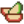

“You can play with my dolls if you want to. Just make sure to brush their hair when you're done.”
— Jas
Jas is a villager who lives just outside Pelican Town. She's a young girl, and can often be found with her best friend Vincent.
Schedule
Warning: Spoilers
This page or section contains unmarked spoilers from update 1.6 of Stardew Valley. Players may want to avoid or be cautious toward reading this article/section.
After the Beach Resort on Ginger Island is unlocked, Jas may randomly spend the day there. After leaving the Island at 6pm, Jas will immediately go home to bed. Jas never visits the Resort on Festival days or her checkup day at Harvey's Clinic. Jas also never visits the Resort without an adult accompanying her.
Shown below are Jas' schedules prioritized highest to lowest. For example, if it is raining, that schedule overrides all others below it.
Leaves beach to walk home, reads in the entryway of Marnie's Ranch
7:00 pm
Goes to her bedroom
9:00 pm
Goes to sleep
Regular Schedule
9:00 am
In her bedroom
11:00 am
Leaves home to stand under the large tree west of Marnie's Ranch and jump rope
3:00 pm
Returns home, reads in the entryway of the shop
7:00 pm
Goes to her bedroom
9:00 pm
Goes to sleep
Relationships
Jas lives with her aunt Marnie and her godfather Shane on her ranch outside town. She's often seen alongside her friend Vincent, who is the only resident of town close to her age. Penny takes time to teach both Vincent and Jas at the museum since there's no school nearby. Jas' parents both died by unknown causes.
You can give Jas up to two gifts per week (plus one on
her
birthday), which will raise or lower
her
friendship with you. Gifts on
her
birthday ( 4 Summer) will have 8× effect and show a unique dialogue. For loved or liked gifts, Jas will say
“
“A birthday gift? That's very kind of you! I love it.”
“
“You remembered my birthday! Thank you. This is great!”
For neutral gifts, Jas will say
“
“Oh, a birthday gift! Thank you.”
For disliked or hated gifts, Jas will say
“
“Oh... It's for my birthday? ... Thanks.”
Love
“
“*gasp*...Wow!! Thank you!”
Fairy Box
“
“Wow, it’s so pretty! And there’s a fairy inside? *giggle*... I can hear her singing. She’ll be my secret friend.”
Stardrop Tea
“
“Are you sure? It smells so good! I'll only drink a thimbleful a day.”
 Apple Slices Cappuccino Mousse Cake Chocolate Popcorn Cotton Candy Ice Cream Sandwich Jawbreaker Personal Pizza Rock Candy Salmon Burger Star Cookie
Dislike
Everything else
Heart Events
Eight Hearts
After reaching 8 hearts with both Jas and Vincent, enter Cindersap Forest during Spring on a sunny day between 6am and 5pm.
Details
Vincent will explain how to clean Spring Onions by removing insects. Jas insists that the insects not be killed after removing them from the onions. Afterward, the player gains Spring Onion Mastery, which permanently increases the sell price of Spring Onions by 5x.
Quotes
Regular
First Meeting
“
“... Hi...”
Regular
“
“Oh...Are you looking for Aunt Marnie?”
“
“What? *giggle* ...hi.”
“
“...”
“
“I'm not supposed to talk to strangers...”
“
“... I don't know you.”
“
“You smell like grass.”
“
“Um... d...do you want something? I'm not supposed to talk to strangers.”
“
“... hi.”
“
“Miss Penny is teaching me how to write in cursive. She has such pretty handwriting.”
“
“Do you like my bow?”
“
“Sometimes I look for crawdads in the river. Don't tell Aunt Marnie... but I fed one to a cow once. She loved it.”
“
“Shane's gone a lot, and Aunt Marnie is busy all the time... so I have to invent my own games. I'm thankful for all my toys.”
“
“Hi, [Mr./Mrs.] [Player]. It's fun to live on a farm.”
“
“Aunt Marnie won't let me go out after 6 o'clock. It's not fair! I'm not afraid of the dark anymore!”
“
“I like living on the farm... my favorite is the fresh ice cream from our cows' milk.”
6+ Hearts
“
“You can play with my dolls if you want to. Just make sure to brush their hair when you're done.”
8+ Hearts
“
“You're always so nice to me, [Mr./Mrs.] [Player] Grown-ups are usually mean and boring, but you're different.”
10 Hearts
“
“Did you know Shane's my godfather? He was a friend of my parents. ...they died.*sniff*”
At Ginger Island
“
“I see a crab!”
“
“Aunt Marnie told me not to get burnt... But when I walk fast, it feels cool, so I think I'll be okay.”
“
“I'm collecting seashells... I'm gonna make a necklace!”
In the dollhouse in Jas' bedroom, the doll representing her grandfather is "wedged under the bed," unlike the rest of the family who is gathered around the dinner table.